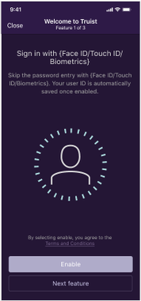
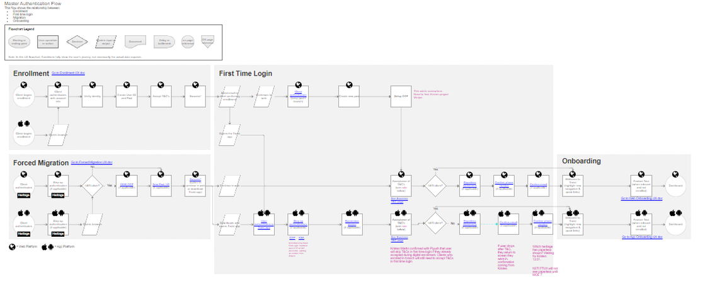
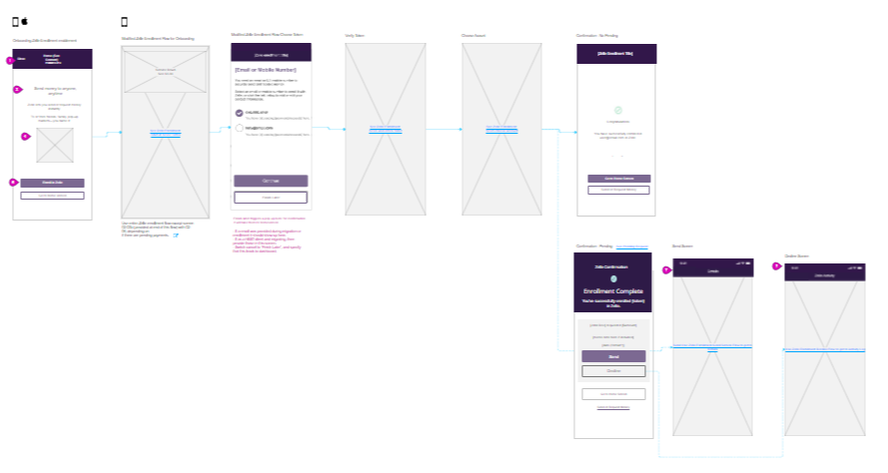
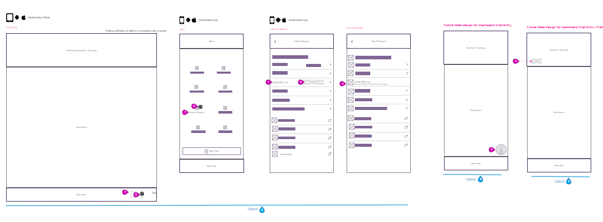
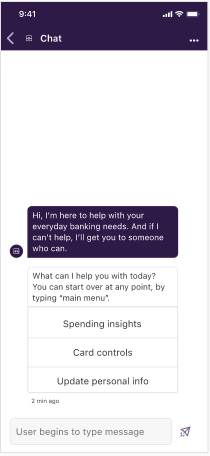
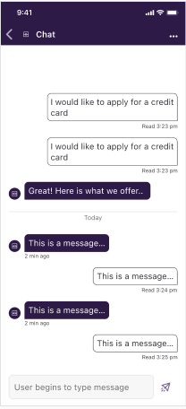
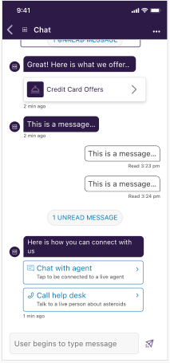

Designing for Millions: Truist’s UX Overhaul in Onboarding & Creating Conversational Banking from Scratch
The merger of SunTrust and BB&T into Truist provided an opportunity to rethink the digital experience. Beyond rebranding, we needed to unify two customer bases, ensuring that first-time users would not only feel at home but also adopt features that improved their banking experience.
Challenges & Objectives
The UX Problem: The merger created two different user bases (BB&T + SunTrust) with different expectations.
The Design Challenge: Ensuring a smooth transition while introducing better UX without disrupting existing customers.
The Goal: Improve onboarding so users adopt new banking features proactively rather than passively clicking through.

The Migration Journey
To guide users through the transition, we designed a migration path with three key entry points:
📌 Forced Migration: Existing SunTrust users logging into the app for the first time were automatically guided into the Truist experience.
📌 First-Time Login: New Truist users had a streamlined authentication process to verify their identity.
📌 Onboarding Tour: A tailored walkthrough introduced key features, reinforcing why users should enable them.

🛤️ While the main migration flow helped transition millions of users into the new Truist experience, onboarding wasn’t always a linear journey.
📍 Some users went straight to their dashboard, while others opted into biometrics, Zelle, or wealth management tools along the way.
To account for this, we designed branching pathways that met users where they were.
Whether it was handling first-time logins, security verifications, or feature opt-ins, we used thoughtful UX patterns to guide users through personalized onboarding experiences without overwhelming them.
📌 Key challenge: How do you balance flexibility while ensuring users complete onboarding efficiently?
💡 Our solution: A structured yet adaptable flow that anticipated edge cases, decision points, and alternate user behaviors—ensuring users felt in control while still progressing toward a fully activated account.

From Onboarding to Conversational UX: Rethinking User Enablement
With no existing chatbot framework, we had to:
📌 Define the problem space—What tasks could the chatbot handle better than static menus?
📌 Architect the conversation flows—How do we make interactions feel seamless?
📌 Balance automation vs. human support—When should users be handed off to a live agent?

Through three rounds of testing with six participants per round, we evaluated the chatbot’s discoverability, usability, and task completion success.
Users initially struggled to find the chatbot, so we placed access points in high-traffic areas like Help & Support and transaction screens.
While freeform chat worked for general inquiries, quick-action buttons improved efficiency, helping users complete tasks faster.
Early skepticism about automation was addressed by refining messaging tone, button hierarchy, and response clarity, ultimately increasing trust in the chatbot experience.
High Fidelity Wireframes in Figma




Bringing together the onboarding transformation and the chatbot launch, this project was about more than just updating screens—it was about ensuring a seamless transition for millions of users while introducing new, smarter ways to engage with banking.
✔️ Onboarding Impact: The redesigned onboarding experience successfully merged users from two legacy banks into a single, modernized mobile app, guiding them toward key features like biometric login, mobile check deposit, and Zelle enrollment. This structured, feature-driven onboarding helped customers adopt tools that improved their banking experience.
✔️ Chatbot Impact: Truist’s first-ever chatbot, designed from the ground up, made self-service banking more accessible and reduced the need for contact center calls. The chatbot was later featured in a company-wide quarterly update, launching to more than 6 million users.
This project reinforced how UX can drive both business outcomes and user empowerment, creating an experience where users can seamlessly onboard and get the support they need—whether through structured flows or conversational AI.